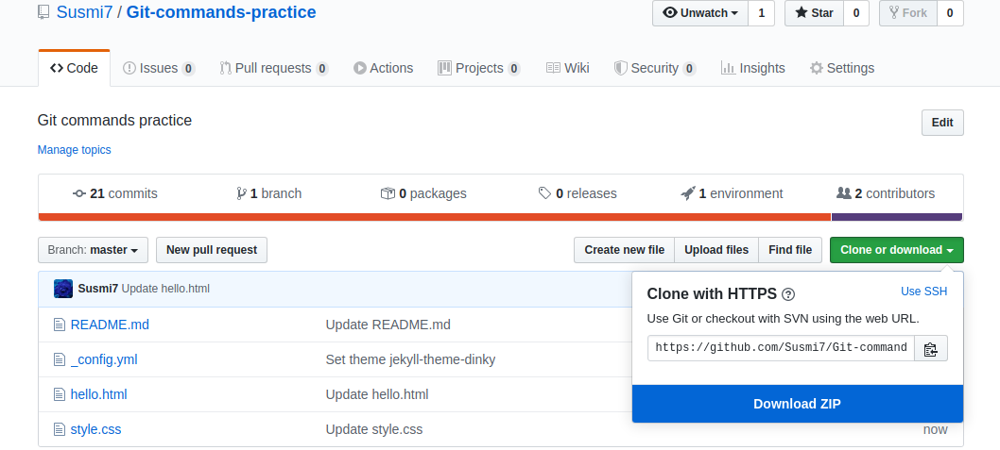
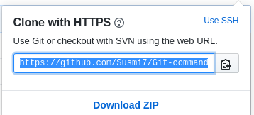

git clone command is used for downloading our remote repository to our local machine.
Following figures show us how can we get the url of our git hub repository for cloning.


Example
$git clone https://github.com/Susmi7/Git-commands-practice.git
Once you execute above command a directory or folder named Git-commands-practice is created in present working directory.You can see all the files present in the remote repository inside of it.
This command is used for taking one or more files in your system and tell git that these are the files which I wish to commit next time.
Syntax: git add <filename>
Following command is used for adding all the files in the directory in next command.
Example
$git add .
This gives information about current status of repository this includes on which branch we are in,what are the files modified,what are the files added and what are the files deleted etc from the last commit.
Example
$git staus
This command takes the current snpshot of the repositoy and saves it.
Syntax: git commit -m message
This message helps in keeping track of changes to the repository.
Example
$git commit -m "Added content"
After running this it will provide us information about changes made to the repository.
This helps in storing the repository in our system to the remote repository.
Example
$git push
On executing above command we may be prompted to enter our credentilas as shown below.

If the repository on which we are working not belongs to us we need access tokens for saving changes remotely from the repository owner.